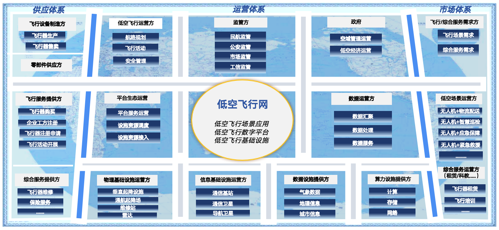

2024 年 7 月，我刚入职公司，在学习参展产品时发现公司还没有低空经济相关产品，而低空经济正在成为政策和产业端快速升温的新赛道。
作品 02 · Emerging Industry Strategy
从机会识别到公司第一部低空经济白皮书
2024 年 7 月入职后，我在学习公司参展产品时发现低空经济方向空白，主动向导师提出研究建议。 随后通过行业研究、客户/伙伴调研、业务架构梳理和白皮书撰写，推动这一模糊新兴赛道逐步成为公司可讨论、可展示、可销售的业务资产。
1部
公司第一部正式白皮书
61页
低空经济白皮书正文
8章
从产业分析到场景推演
48小时
带队完成庆阳方案初稿
Overview
背景、问题与我的角色
项目初期公司对低空经济缺少系统认知，需要先回答产业链、客户场景、运营商/ICT 厂商切入点，以及公司能力如何迁移等基础问题。
我完成前期行业市场研究，参与客户与合作伙伴访谈、业务架构和业务全景图梳理，并主导白皮书整体框架和业务章节撰写。
Key Takeaway
核心判断与分析逻辑
我在低空经济项目中的核心贡献，是把一个公司尚未进入的新兴赛道，从“热点机会”转译成产业链、场景、客户、业务架构和白皮书材料。
Fact
项目初期公司对低空经济缺少产品和系统认知，市场本身也处于早期阶段，业务形态尚未完全成熟。
Judgment
新兴赛道不能直接做产品包装，必须先完成产业链、政策、客户场景和能力迁移的系统研究。
So what
我推动形成研究方法框架、业务全景图和公司第一部低空经济白皮书，让项目具备对外传播和客户沟通材料。
Path
项目推进路径
发现机会
学习公司参展产品时发现低空经济方向空白，向导师提出研究建议。
管理层触发预研
广州展会期间向管理层提到低空经济机会，公司决定启动初期预研。
从行业到业务
从整体赛道研究逐步收敛到低空飞行网和 To G 城市低空运营平台。
形成白皮书
沉淀公司第一部正式白皮书，成为对外宣传、销售和客户交流材料。
Evidence 01
白皮书框架：从产业分析到场景推演
| 模块 | 章节 | 证明的能力 |
|---|---|---|
| 基础认知 | 低空经济概述、定义与特点、研究思路 | 从概念和研究路径建立统一理解。 |
| 产业分析 | PEST 分析、产业链与相关方、细分领域定位 | 宏观、中观、微观层面的市场研究能力。 |
| 业务定义 | 低空飞行服务、低空飞行网络、业务全景图 | 把产业机会转译成业务对象和服务边界。 |
| 方案表达 | 数字化总体架构、低空飞行数字网络、低空飞行数字服务 | 连接业务需求与技术/平台表达。 |
| 场景验证 | 物流配送、农林植保、紧急救援三类场景推演 | 通过场景拆解验证低空飞行网络的业务价值。 |
| 未来判断 | 挑战与展望：基础设施、关键技术、市场需求 | 形成面向后续产品规划的判断框架。 |
Evidence 02
研究方法：Z1 → Z2 → Z3
| 阶段 | 目标 | 方法 | 输出件 |
|---|---|---|---|
| Z1 行业市场信息输入与解读 | 从政府、行业、市场及客户侧输入最新行业市场信息，并对专项输入进行解读。 | 信源库搭建、政府信息输入、学术论文输入、白皮书输入、技术规范输入、政策/规范/论文/白皮书/创新技术/创新业务解读。 | 行业信息解读帖。 |
| Z2 行业市场分析 | 从宏观、中观、微观研判外部环境，了解发展趋势，进行产业与目标市场分析，找到机会和差异策略。 | PEST、产业链分析、波特五力、BLM、差距分析；包含宏观环境、产业链、市场规模、竞争对手、客户调研、市场需求、标杆发展等分析。 | 行业市场分析报告。 |
| Z3 业务研究分析 | 通过业务领域分析构建业务架构，进行领域分析和过程分析，通过技术预研形成整体系统全景图，识别技术创新点。 | 领域划分、业务上下文、场景端到端、业务能力识别、概念模型、三点三边分析、业务流程梳理、关键技术路线、系统架构图、产品规划建议。 | 业务&技术领域研究报告。 |
这套方法也可以迁移到 AI 行业研究：先建立信源与问题框架，再做业务场景和产品机会验证。
Evidence 03
业务全景图与低空飞行网
低空经济生态全景图
从供应体系、运营体系、市场体系三个方向梳理低空经济参与方，帮助公司理解产业链角色和可进入位置。

低空飞行网业务示意
围绕起飞前、起飞、飞行中、降落、飞行后等环节，表达低空飞行网络、数据、通信、导航、监控、气象和算力等支撑能力。

Result
结果与影响
该项目推动公司从没有低空经济相关产品和研究积累，逐步形成低空经济方向的初期预研、项目立项、业务方案和对外表达材料。 白皮书是公司第一部正式白皮书，后续成为公司对外宣传、销售和客户交流的重要产品材料，并获得 CEO 肯定。
在项目演进过程中，我还带领团队在 48 小时内完成面向甘肃庆阳的低空飞行数字化解决方案初稿。 该方案基于白皮书和前期研究成果，不在作品页公开具体内容，但可作为面试中的项目推进案例补充说明。
0→1从主动发现机会，到推动公司启动低空经济初期预研。
1公司第一部正式白皮书，可公开展示并用于销售客户交流。
61页白皮书正文，覆盖产业分析、业务定义、场景推演和未来展望。
48h带领团队完成庆阳低空飞行数字化解决方案初稿。
Output
主要产出
| 产出 | 我的贡献 | 结果或用途 |
|---|---|---|
| 低空经济行业市场研究 | 覆盖政策背景、产业链结构、主导企业、应用场景、客户类型和商业机会。 | 支撑项目从赛道认知进入业务方向讨论。 |
| 客户与合作伙伴调研 | 参与实际客户和合作伙伴访谈，补充一线业务需求和场景判断。 | 补充一线业务需求和真实场景判断。 |
| 业务架构与业务全景图 | 提供业务信息，参与业务架构、业务全景图和系统全景图梳理。 | 帮助团队把产业参与方、业务流程和平台能力讲清楚。 |
| 低空经济白皮书 | 主导整体框架设计和业务章节撰写，完成内容汇总发布。 | 沉淀为公司第一部正式白皮书，用于对外宣传、销售和客户交流。 |
| 对外传播与客户材料 | 撰写白皮书相关推文，参与展会/路演产品演讲推广。 | 将研究成果转化为公司可传播的市场与产品叙事。 |
Ability Map
这个项目体现的岗位能力
能从早期赛道中识别机会，建立政策、产业链、客户和应用场景的研究框架。
能把行业研究转化为业务方向、客户方案、产品边界和销售材料。
能主导白皮书框架、业务章节和对外传播内容，把复杂产业问题讲清楚。
脱敏说明：系统架构、客户方案全文、客户访谈细节和内部产品信息不公开；本页面仅展示白皮书公开内容、业务图示和方法结构。